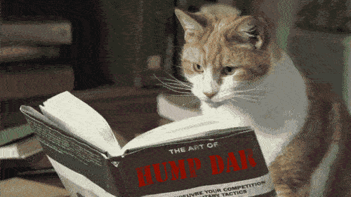

Our emblem is a digital photograph of a hammer (manual making) superimposed over a folded page (the 2d text that now unfolds in three dimensions).
Centuries of text-based scholarship and the primacy of the press created the context within which print culture became naturalized. Needless to say, we are NOT arguing for the abolition of books.  On the contrary, we are advocating for a neo- or post-print model where print becomes embedded within a multiplicity of media practices and forms of knowledge production. It is one in which architecture and design (again) become central features of how research questions get formulated as well as communicated, shaped, and styled. This is an incredibly exciting moment in which determining and designing the interface to information, data, and knowledge becomes just as central as the crafts of writing, curating, and coordinating.
The dichotomy between the manual realm of making and the mental realm of thinking was always misleading. Today, the old theory/praxis debates no longer resonate. Knowledge assumes multiple forms; it inhabits the interstices and criss-crossings between words, sounds, smells, maps, diagrams, installations, environments, data repositories, tables, and objects. Physical fabrication, digital design, the styling of elegant, effective prose; the juxtaposing of images; the montage of movements; the orchestration of sound: they are all making.
Let's not forget: though their traditions were rooted in oratory and rhetoric, the modern Humanities disciplines were profoundly reshaped around and by the medium of print, just as now they are confronting the challenges of being profoundly reshaped by newly emergent digital norms and potentialities. What does it mean to study "literature" or "history" when print is no longer the normative medium in which literary or historical artifacts are produced, let alone analyzed?
What does it mean to think when thinking is decoupled from its exclusive reliance upon language and textuality? What does it mean, more generally, for humanistic knowledge?
In the 70s and 80s, women's studies, LGBTQ studies, ethnic studies, and cultural studies opened up the humanities to address issues of social, political, and cultural disenfranchisement and possibilities for re-enfranchisement. The Humanities was no longer the domain of the proverbial "old white man." Now, Digital Humanities deconstructs the very materiality, methods, and media of humanistic inquiry and practices. But we must persist in asking: Where did humanities disciplines come from, in response to what kind of needs, with what sort of explanatory power? How did its practices, truth-making strategies, knowledge products, media forms, and ways of evaluating utterances get naturalized? Traditional Humanities is balkanized by nation, language, method, and media. Digital Humanities is about convergence: Not only between humanities disciplines and media forms, but also between the arts, sciences, and technologies.
Making in the poetic sense of poeisis, but also in the sense of design carried out in action, the modeling and fabrication of intelligent things, the generative and re-generative aspects of creation and co-creating. The 20th century left us with a vastly expanded set of spectacles arranged for our viewing pleasure. 21st century networks and interactions reengage the spectators of culture, enabling them to upload meaningfully, just as they download mindfully.